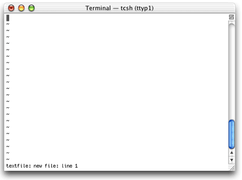
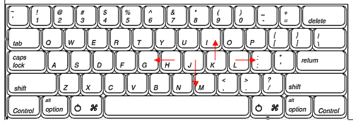
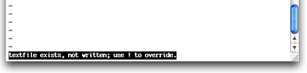

Руководство по редактору vi для начинающих.Wei-Meng Lee, 2003. Перевод - Master aka Vadim
Tkachenko, *nix project.
Ягуар (имеется в виду MacOS X 10.2 Jaguar-
прим. SHuRuP'а) включает несколько текстовых редакторов. Из
всех этих приложений опытные пользователи Unix предпочетают vi
(Visual Editor). Пока пользователи GUI систем используют user
friendly текстовые процессоры и редакторы, существует vi,
который является мощным и функциональным текстовым редактором,
а также экономичным и эффективным.
Тем не менее,
изучение vi требует терпения и небольшой практики;
следовательно, кривая изучения более крутая, чем при изучении
текстового редактора, типа BBEdit. Но программисты, которые
обычно используют vi, клянутся в этом. Для некоторых,
использование vi - символ силы, отличающий мужчин от
мальчиков.
Но что делать, если вам нужно быстро
отредактировать файл на терминале, а времени для изучения vi
нет? В этой статье, я представлю руководство по начальным
знаниям редактора vi. Помните, информации по vi достаточно,
чтобы написать книгу, и, следовательно, эта статья конец
айсберга. Надо надеяться, эта статья откроет для вас редактор
и подтолкнет на дальнейшее его изучение.
Запуск
vi
Для запуска vi необходимо набрать в
терминале:
vi textfile
Когда vi
загрузится, вы увидете окно, похожее на следующее:

Первая важная вещь - это то, что редактор vi
работает в двух режимах: режиме команд (Command mode) и режиме
вставки (Insert mode). Режим команд используется, чтобы
выполнять команды, например, команды удаления строки или
символа. Чтобы начать печатать, необходимо перейти в режим
вставки. Когда вы запускаете vi, он находится в режиме
команд.
Перемещение курсора
Как показано
на рисунке, чтобы управлять курсором, можно использовать
клавиши h, j, k и l:

Сначала, такое управление курсором может
показаться странным, но после небольшой практики вы получите
огромное удобство.
Особенно интересно, что для
перемещения курсора на пять знаков вправо, вы можете набрать
5l; чтобы переместить курсор на три линии вниз, вы можете
набирать 3j и т.д.
Для того, чтобы переместить курсор
на начало линии, нажмите 0 (числовой нуль). Для того, чтобы
переместить курсор на конец линии, нажмите $.
Давайте
попытаемся набирать некоторый текст в наш
файл.
Вставка текста
Чтобы начать
печатать, необходимо перейти в режим вставки. Нажмите i
(для вставки символов) и введите следующее:
vi is an
editor in Unix
Что происходит, если вы сделали
ошибку и хотите ее изменить? Скорее всего, вы захотите
переместить ваш курсор в символе, который нужно редактировать,
и, делая это, вы будете использовать клавиши перемещения
курсора, и тогда странные символы появятся у вас на экране.
Если это так - не паникуйте. Просто нажмите клавишу Esc, чтобы
возвратиться в режим команд. Нажатием клавиши Esc
осуществляется переход из режима вставки в режим
команд.
Добавление текста
Теперь, когда
вы напечатали первое предложение, давайте его отредактируем. Я
хочу прочитать: "vi is a powerful editor in Unix". Для этого
переместите ваш курсор на символ "a" (подчеркивание указывает
позицию вашего курсора):
vi is an editor in
Unix
Нажмите a (для добавления символов) и
введите " powerful". Должно получиться:
vi is a
powerfuln editor in Unix
Вы увидели различие между
a и i? Если бы вы нажали i, когда курсор
находился на символе "a" и ввели " powerful", то у вас
получилось бы следующее:
vi is powerfulan
editor in Unix
Видите разницу?
Для того,
чтобы вставить новую строку, просто нажмите клавишу Enter или
используйте o, чтобы вставить новую строку между двумя
строками.
Удаление текста
Для того, чтобы
удалить символ, переместите курсор на символ и нажмите
x.
Для того, чтобы удалить целое слово, например
"powerful", переместите курсор к началу слова и нажмите
dw:
vi is a powerful editor in
Unix
Для того, чтобы удалить целую строку,
переместите курсор на строку, которую вы хотите удалить, и
нажмите dd. Для того, чтобы удалить несколько линий,
нажмите dnd, где n - количество строк,
подлежащих удалению. Например, d2d удалит две
cтроки.
Сохранение файла
Если Вы
запускаете vi с параметром <имя файла>, то, нажав
:w и Enter, можно сохранить результат изменений. Когда
вы нажмете : в командном режиме, курсор переместится в
нижнюю часть экрана. Здесь можно будет вводить
команды.
Если Вы запускаете vi без параметров, то вы
должны определить имя файла:
~
~
:w
newfile.txt
Вы можете использовать этот метод,
чтобы сохранять файл под другим именем. Если имя файла,
которое вы определяете, существует, то vi не перезапишет
существующий файл. В таком случае, используйте :w!,
чтобы перезаписать существующий файл.

Вставка файла
Со временем,
возможно, вам потребуется вставить содержимое одного файла в
текущий файл. В этом случае, можно использовать :r,
например:
~
~
:r
anotherfile.txt
Просто сначала установите курсор на
строке, где необходимо вставить файл, а затем нажмите
:r.
Выход из vi
Для того, чтобы
выйти из vi, используйте команду :q. Если файл
модифицирован и вы не сохранили изменения, vi не позволит вам
выйти. Для того, чтобы выйти не сохраняя результатов,
используйте :q!.
Открытие
файла
Если Вы хотите отредактировать другой файл в
то время, когда вы еще находитесь в vi, можно использовать
:e, чтобы открыть другой файл для
редактирования:
~
~
:e
textfile.txt
Копирование, вырезка и вставка
текста
Чтобы скопировать блока текста, вы можете
использовать команду y. Для копирования строки
используйте yy.
vi is an editor
in Unix
Real programmers use vi!
Have you tried
it? |
yy скопирует строку
"vi is an editor in Unix" |
Для
копирования слова используйте yw.
vi is an editor
in Unix
Real programmers use vi!
Have you tried
it? |
yw скопирует слово
"editor" |
Для копирования от
курсора до конца строки используйте y$.
vi is an editor
in Unix
Real programmers use vi!
Have you tried
it? |
y$ скопирует строку
"editor in Unix" |
Для вставки
текста используйте команду p.
vi is an editor
in Unix
Real programmers use vi!
Have you tried
it? |
В продолжение предыдущего
примера,
P (заглавная p):
vi is an
editor in Unixeditor in Unix
Real programmers use
vi!
Have you tried it?
p (строчная
p):
vi is an eeditor in Unixditor in Unix
Real
programmers use vi!
Have you tried
it? |
Заметьте, что для
операций вырезки, вы можете использовать команду d (см.
"Удаление текста") для вырезки блока текста и команду p
для вставки блока текста.
Отмена и
возврат
Вы можете отменить ваше действие, нажав
u. Заметьте, что вы можете отменить только последнее
действие. Для возврата действия, используйте
(.).
Изменение и замена текста
Вы
можете изменить текст в файле, используя команду c.
Например, cw позволяет изменить целое слово:
vi is an editor in
Unix
Real programmers use vi!
Have you
tried it? |
cw Solid (и нажать
escape) замена слова "Real" словом
"Solid" |
Для изменения
последних трех слов используйте c3b.
Для того,
чтобы изменить слово, начиная с текущей позиции курсора и до
конца строки, используйте c$.
Для того, чтобы
изменить слово, начиная с начала строки и до текущей позиции
курсора, используйте c0 (числовой нуль).
Для
того, чтобы заменить единственный символ, наведите курсор на
символ, который вы хотите заменить, и нажмите r, а
затем новый символ.
Поиск текста
Для
того, чтобы искать конкретную часть текста в vi, используйте
команду /, сопровожденную текстом, который необходимо
найти. Например, /in ищет первое появление слова "in".
Для повторения поиска нажмите / и затем
Enter.
Чтобы заменять все слова в документе, вы можете
использовать команду s. Например, :s/in/on
заменит первое появление слова "in" словом
"on".
:s/in/on/g заменит все слова "in" словом
"on" на текущей строке.
:1,45s/in/on/g заменит
все слова "in" словом "on" с 1-ой по 45-ю
строки.
:%s/in/on/g заменит все случаи слова
"in" словом "on" во всем файле.
Переход к
строке
Если вы редактируете большой файл, можно
переместиться непосредственно на нужную строку, печатая номер
строки. Например, :4 переместит курсор непосредственно
на 4-ю строку. Это полезно, когда вы отлаживаете программу, и
компилятор указал ошибку в конкретной строке.
Я
надеюсь, что это руководство оказалось для вас полезным.
Помните, чем больше вы используете vi, тем больше вы получаете
от него удовольствия.
Удачи!
| |
Источник - LinuxBegin.ru
http://linuxbegin.ru/
Адрес этой
статьи:
http://linuxshop.ru/linuxbegin/article244.html
|